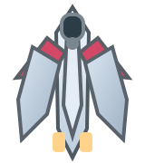
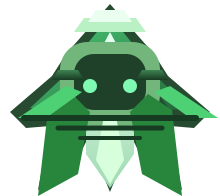
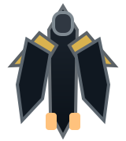
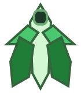
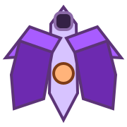
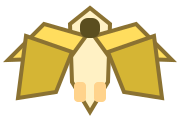
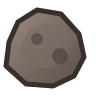
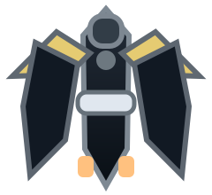
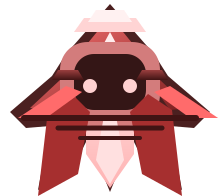

星海防线
飞机大战
在经典街机循环上加入武器、特殊敌机、终局 boss 和多阶段战斗。


设置
调节全局难度倍率。倍率越高，刷怪越快、敌机越强。
帮助
这份文档按实际玩法整理了操作、武器、敌机、Boss 与通关规则，第一次游玩时建议先快速浏览一遍。
图示：玩家战机会自动开火，主要通过移动躲避弹幕和碰撞。
基础操作
方向键或 WASD 控制战机移动。你的默认武器会自动开火，所以核心操作并不是“按键射击”，而是不断调整站位、切换武器并避开碰撞。屏幕上方 HUD 会显示关卡、战区、生命、当前武器和弹药，右侧武器栏会显示每种武器的可用状态。
桌面端按住 H 使用速射，按住 J 使用扩散，按住 K 为重炮蓄力并在松开后发射，按下 M 则会启动一段自动追踪导弹时间。暂停时可按空格继续，死亡后可以直接重新开始。移动越平稳、越提前判断弹道，生存时间通常就越长。
图示：从左到右分别是生命、H 速射、J 扩散、K 重炮、M 集束导弹补给。
武器与掉落
绿色掉落回复生命；H 速射适合快速压血和追击高速目标；J 扩散适合清理正前方密集杂兵；K 重炮适合打厚血目标，蓄力越高伤害越高，接近满蓄力后还会附带更强的穿透与持续伤害效果；M 集束导弹会在短时间内自动锁定场上的敌机。
特殊敌机、Boss 和终局战阶段都会提供补给。一般建议把速射留给突袭机和 Boss 压血，把扩散留给杂兵密集时段，把重炮留给普通 Boss、终局 Boss 或高血量危险单位。弹药不是越早打掉越好，而是要留给真正能拉开局势的窗口。





图示：普通敌机、突袭机、炸弹机、补给机和高耐久陨石都会在不同阶段出现。
敌机与危险单位
普通敌机会从上方向下压进，虽然血量低，但数量一多仍会挤压你的走位空间。突袭机会高速切入并留下危险尾迹，尾迹本身也会造成碰撞伤害；炸弹机被击毁后会形成大范围爆炸，所以不要贴脸击落；补给机会为附近敌人回血，如果放任它存活，战场压力会迅速变高；陨石带阶段会不断落下高耐久障碍物，移动空间会明显缩小。
面对这类单位时，通常优先级是：先处理会改变战场结构的敌人，再处理普通杂兵。换句话说，补给机、炸弹机、突袭机和陨石往往比普通敌机更值得优先瞄准。看到大体型目标或闪烁提示时，先保命、再找角度输出，会比硬吃伤害更稳。

图示：普通 Boss 会周期出现，并根据模式使用不同弹幕节奏；击败后通常能拿到更有价值的补给。
普通 Boss 机
普通 Boss 会在闯关流程和无尽模式中阶段性登场。它并不是终局 Boss，但比普通敌机危险得多，拥有更高血量、更密集的弹幕，以及明显的攻击模式切换。HUD 中会显示普通 Boss 的血条和当前攻击模式，常见模式包括狙击模式、扇扫模式和连射模式。
狙击模式会朝玩家当前位置打出更快、更重的子弹，适合通过提前横移来规避；扇扫模式会把弹幕铺开，逼迫你改变站位；连射模式虽然单发威力较低，但节奏快、失误成本高。普通 Boss 出现时，建议优先保持中距离活动空间，不要把自己逼到边角，再用重炮或速射持续压血。击败普通 Boss 后，往往能拿到更高价值的武器补给，为下一阶段做准备。

图示：终局大 Boss 会进入二阶段，击毁后还会在战场中央生成黑洞完成结算。
第三关终局战
第三关后半段会出现终局大 boss。它的体型更大、行动模式更多，会使用速射、扩散、重炮蓄力、召唤补给机和高速冲刺等攻击方式。战斗中 HUD 会切换成专门的终局血条，屏幕上还会出现额外预警，提醒你它正在准备危险招式。
当终局 Boss 血量降低到一定程度后，会进入更激进的二阶段，攻击频率提高，冲刺和高蓄力重炮也更危险。这一阶段最重要的是不要贪刀，先保证自己始终有横向机动空间，再选择用速射持续压血或用重炮抓大硬直窗口。
击毁终局 Boss 后不会立刻结算胜利，而是在原地生成黑洞。此时战斗目标已经结束，你需要主动靠近黑洞并被它吸入，才会进入最终胜利界面。如果你看到黑洞出现，不要误以为还要继续刷敌机，应该尽快靠近完成撤离。
图示：一局的节奏通常是生存、补给、Boss 压制与终局决战的循环。
实战建议
如果你刚开始游玩，最简单的思路是：默认单发清小怪，看到危险敌人时再切武器；保持机体尽量在屏幕中下部活动，给自己留下躲弹空间；补给出现时不要盲目直冲，先确认路径安全。真正导致失败的，往往不是火力不足，而是走位被逼进角落。
当普通 Boss 或终局 Boss 出现时，建议优先使用速射稳压血量，在看清弹幕节奏后，再找机会用重炮打一轮爆发。无尽模式则更考验资源管理和应对事件切换的能力，能否保留关键弹药，往往比一时多打几点伤害更重要。
飞机大战
方向键 / WASD 移动，按住 H/J 连发；按住 K 蓄力、松开发射重炮；M 启动 5 秒集束跟踪导弹。
桌面端：方向键 / WASD 移动，按住 H/J 连发；按住 K 蓄力后松开发射；M 启动 5 秒自动追踪导弹。